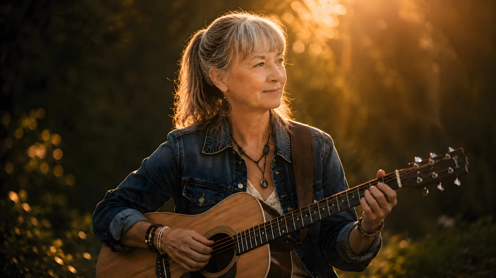
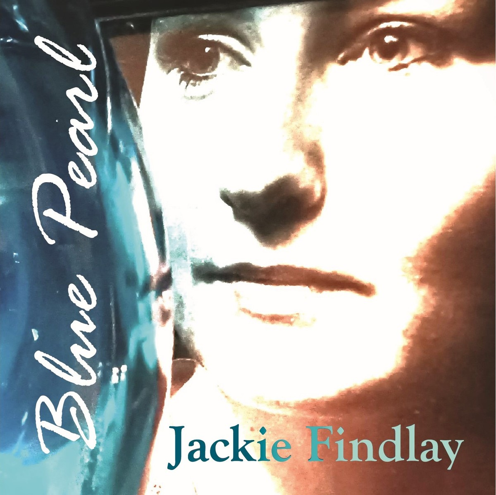
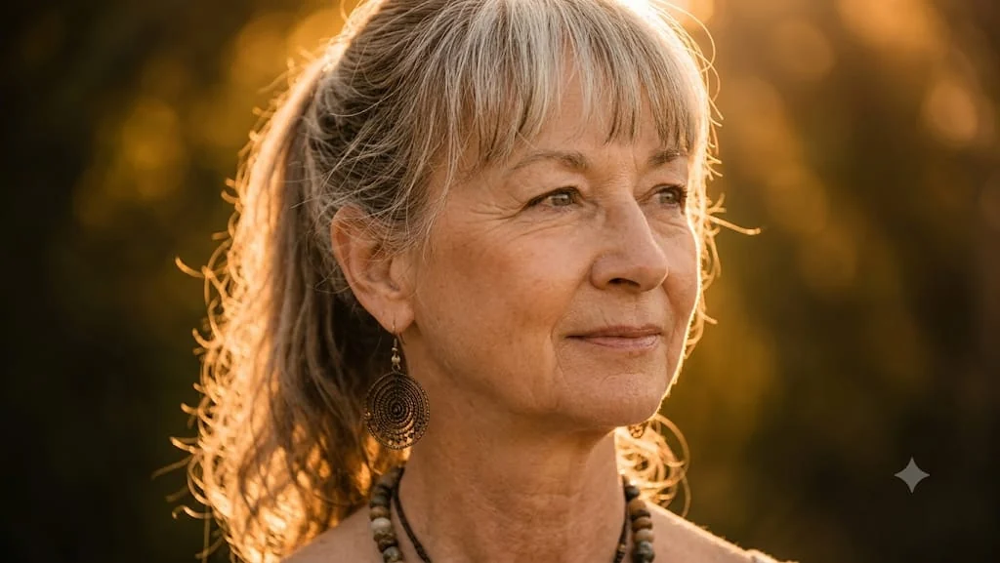
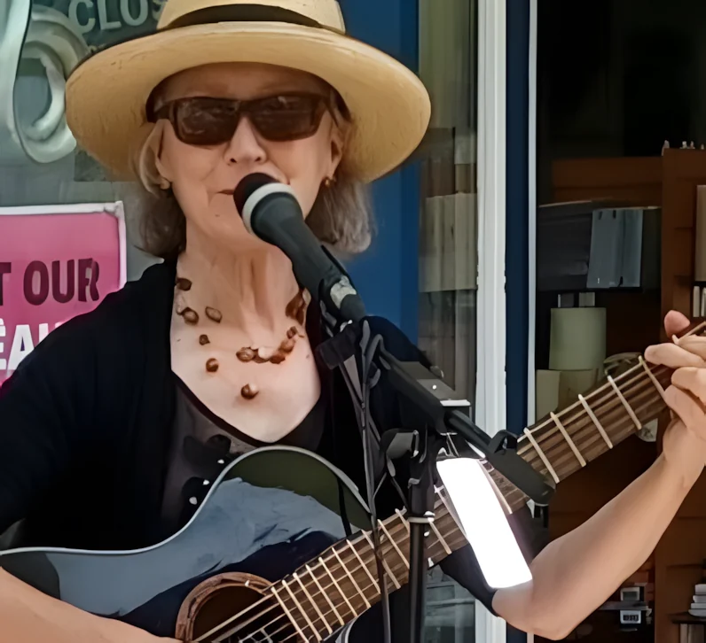
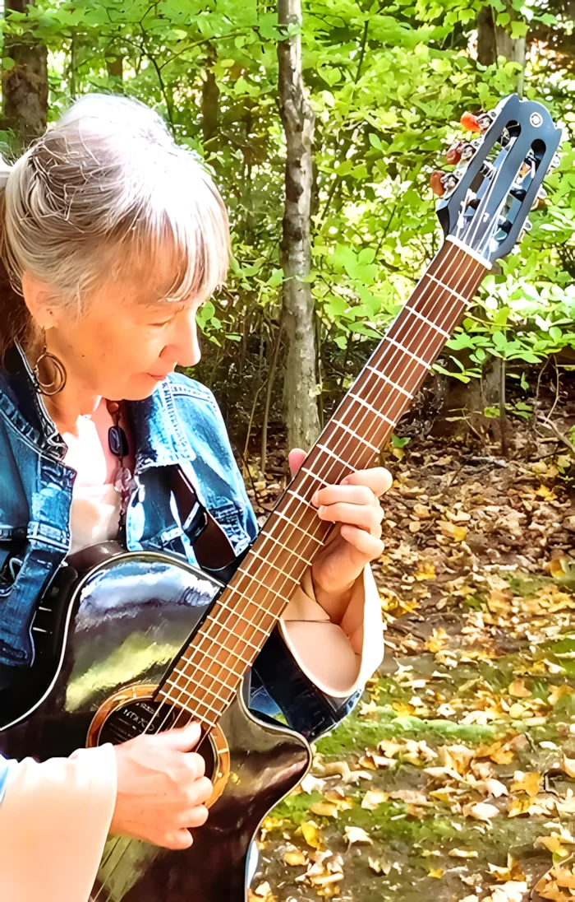

Music connects us
Jackie
Findlay
Singer • Songwriter • Storyteller
Songs shaped by life,
love, loss and hope.
Songs
Brighter
Tomorrows ♡
STORIES
PLACES
SONGS
ALWAYS MATTER

Latest album
Blue Pearl
A collection of songs born from real life — moments of letting go, finding peace and discovering beauty again. Honest, heartfelt and hopeful, these songs invite you to slow down, listen and feel.
45-second song previews • Full tracks available after purchase.

About Jackie
A Lifetime of Stories
Jackie Findlay is an award-winning Canadian singer-songwriter whose music has been shaped by a lifetime of experience — joy and loss, love and change, resilience, healing and hope.
Born and raised in Belleville, Ontario, she began studying classical guitar at fourteen and later expanded her musical education through piano, opera and studies at Queen’s University. After stepping away from music for many years, Jackie eventually found her way back to the guitar, songwriting and performing.
“The return felt less like starting over and more like coming home.”
Jackie Findlay — Biography
Award-winning singer-songwriter Jackie Findlay has always had music at the heart of her life. Her songs are shaped by experience — by joy and loss, love and change, and by the quiet moments of understanding that often reveal themselves only with time. With an expressive voice and a natural gift for storytelling, Jackie creates music that is deeply personal while still finding a connection with the lives of others.
Born and raised in Belleville, Ontario, Canada, Jackie began studying classical guitar at the age of fourteen. She later continued her studies with the highly respected Eli Kassner of the Guitar Academy in Toronto. During those early years, she also began singing and performing at local venues, drawing inspiration from artists who would leave a lasting influence on her musical life, including Joni Mitchell, Carly Simon, James Taylor, Shawn Phillips, and classical guitar master Andrés Segovia.
Music quickly became much more than an interest. Wanting to understand it from every direction, Jackie expanded her studies to include piano and opera and later attended the music program at Queen’s University in Kingston, Ontario. She participated in songwriting workshops, continued developing her own material, and eventually attracted interest from major music publishers in Nashville with her songwriting and distinctive voice.
Jackie later had the opportunity to tour with singer-songwriter Donna O’Connor and the band Hostage. Her musical journey appeared to be gathering momentum, but life had other plans. She stepped away from what had been a promising young career, and for many years music moved into the background.
It never disappeared.
The years that followed brought experiences that would eventually become an important part of the artist Jackie is today. There were moments of great happiness, but also periods of loss, sorrow and challenge. Over time, those experiences gave her something that could never have been learned in a classroom: a deeper understanding of life and of the emotions that connect us to one another.
Eventually, Jackie found her way back to her first loves — the guitar, singing, songwriting and performing.
The return felt less like starting over and more like coming home.
With a renewed desire to share the songs she had carried with her for so long, Jackie began what she considers the second chapter of her musical life. She returned to recording and performing, bringing with her not only everything she had learned as a musician, but everything she had experienced as a person.
That life experience can be heard throughout her music today. Her songs are thoughtful, melodic and honest, often exploring love, loss, resilience, healing, hope and the unexpected turns that shape a life. Rather than trying to fit neatly into one musical category, Jackie allows each song to tell its own story.
Returning to the music world only five years ago, Jackie sometimes describes herself as a late bloomer. But she now sees the years and experiences that came before her return very differently:
“I’ve always known I was meant to create and share music in my own unique way. What once seemed like setbacks along the journey have really been precious gifts of understanding, healing, awakening and grace.”
Videos
Songs in Pictures


Live • Upcoming Show
October 17, 2026
Jackie Findlay Solo Concert
Free Play Cafe
324 Terminal Ave.
Nanaimo, B.C.
Refreshments Offered
Photos
Moments Along the Way


Write to Jackie
Send Jackie a Message
For booking inquiries, collaborations, or simply to say hello, send Jackie a message directly from the website.